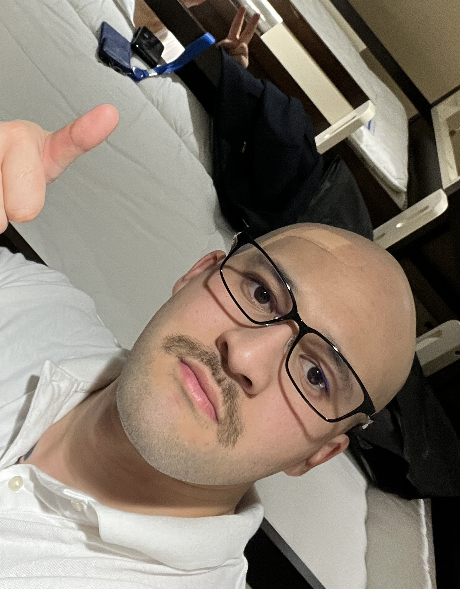

Andre Mayn

Contact
Summary
Dedicated and self-driven gent that enjoys complex problem-solving
with a large set of skills and experience.
Work Experience
Automation Engineer
Metro Galss NZ, Auckland // 2020 02 - 2022 07
- Troubleshot, fixed and improved electrical controls.
- Collaborated with systems engineers and customers
to determine machine requirements
and develop specifications for user interface,
machine functions and quality control to deliver reliable automation systems.
full stack developer
The Enspiral Dev Academy, Auckland // 2018 12 - 2019 08
- a food rating app on local restaurants in New
Zealand Auckland
My role on the team was testing,
resolving github
conflicts and adding some features (comments,
forms etc..)
Representative
Coca-cola, Palmerston North // 2013 07 - 2018 10
- Understood each target customer's business
model, mapped out organization, and identified unique technology needs.
- Developed and maintained positive customer
relations and coordinated with team members to properly handle requests and questions.
Education & Skills
Bachelor of Science: Data Science
Dev Academy Full Stack development
Certified Unity Game Developer 2D
Certified Unity Game Developer 3D
Certified Unreal Engine 5 / 4
Certified C++ Progammer